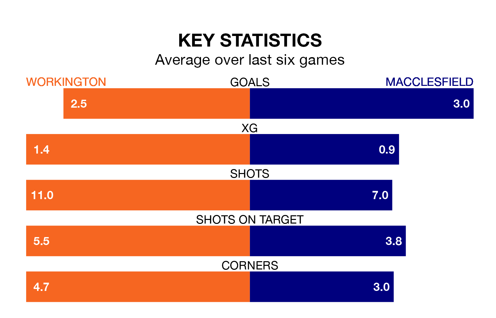

Tuesday's late match between Workington and Macclesfield promises to be one for the neutrals, as two of Northern Premier League's most free-scoring sides go head-to-head.
Ahead of the game at Borough Park, Workington and Macclesfield sit joint-third in the goal-scoring charts, with goal 42s apiece.
Macclesfield are seventh in the table after 19 games, of which they have won 10 and drawn three, earning 33 points.
Workington are seven places behind the visitors in 14th, with seven wins and six draws putting them on 27 points.
The home side are in mixed form in Northern Premier League, with one win and five draws from their last six games.
With four wins and a draw over that period, Macclesfield's form is better – they have taken 13 points from 18, compared to Workington's eight.
Workington's last match was on Saturday, a 2-2 draw against Ashton United.
Macclesfield lost 4-3 against Bradford Park Avenue last time out, also on Saturday.
